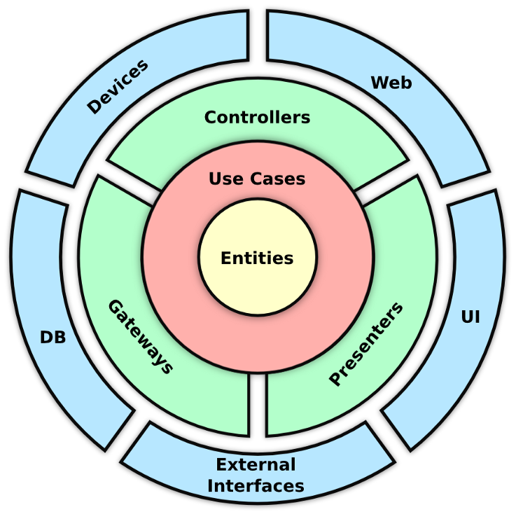

Haftungsausschluss und Methodik
Design-Methodik
Diese Architekturdokumentation folgt den Prinzipien der Clean Architecture, wie sie von Robert C. Martin beschrieben wird
- Unabhängigkeit von Frameworks
- Testbarkeit
- Unabhängigkeit der Benutzeroberfläche
- Unabhängigkeit der Datenbank
- Unabhängigkeit von externen Systemen 
System-Design-Ansatz
Das System ist nach folgendem Schichtenmodell aufgebaut:
- Enterprise Business Rules (Entities)
- Application Business Rules (Use Cases)
- Interface Adapters (Controllers, Presenters, Gateways)
- Frameworks and Drivers (Web, UI, DB, Devices, External Interfaces)
Dokumentations-Toolchain
Diese Dokumentation wird erstellt mit:
- Material for MkDocs: Ein moderner Generator für statische Dokumentationswebseiten
- Mermaid.js: Für Sequenzdiagramme und Flussdiagramme
- PlantUML: Für detaillierte Architekturdiagramme und Komponentenvisualisierung
- GitHub Workflow: CI-Workflow zur Erstellung der HTML-Seiten
Anforderungsanalyse
Die Anforderungsanalyse folgt einem systematischen Ansatz:
Funktionale Anforderungen
- Kerngeschäftsfähigkeiten
- Systemverhalten
- Benutzerinteraktionen
- Datenverarbeitungsanforderungen
Nicht-funktionale Anforderungen
- Leistungskennzahlen
- Sicherheitsanforderungen
- Skalierbarkeitsüberlegungen
- Zuverlässigkeitsstandards
- Wartbarkeitsaspekte
Integration der Customer Journey
Die Architektur berücksichtigt die gesamte Customer Journey und stellt sicher, dass technische Implementierungen mit Benutzererfahrungen und Geschäftsprozessen übereinstimmen. Die Journey-Mapping hilft bei der Identifizierung von:
- Berührungspunkten
- Integrationsanforderungen
- Service-Abhängigkeiten
- Benutzerablaufprozessen
Urheberschaft des Inhalts
Alle Inhalte dieser Dokumentation wurden vom Autor unter Mitwirkung von Claude Sonnet (Anthropic, Version 2024) einzigartig erstellt. Die Kombination aus menschlicher Expertise und KI-Fähigkeiten gewährleistet:
Die Nutzung der KI-Unterstützung verbessert die Dokumentationsqualität bei gleichzeitiger Beibehaltung der menschlichen Aufsicht und Domänenexpertise während des gesamten Architekturdesignprozesses.
Hinweis: Diese Dokumentation entwickelt sich kontinuierlich weiter und wird gepflegt, um den aktuellen Stand der Architektur widerzuspiegeln.